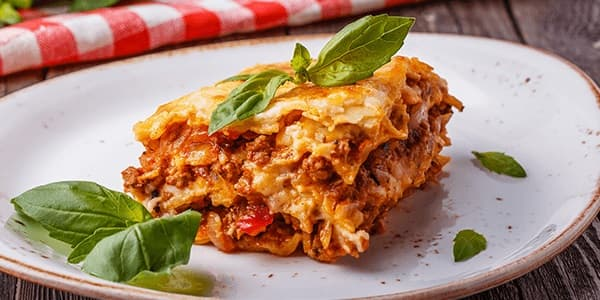

Лазанья — это традиционное блюдо итальянской кухни, которое имеет множество вариаций. Начинку для лазаньи готовят из мясного фарша, морепродуктов, овощей, шпината. А мы предлагаем попробовать классический рецепт лазаньи болоньезе, которую любят гурманы по всему миру.
Мясная лазанья считается визитной карточкой итальянской гастрономической культуры. Сочный соус болоньезе, нежный сливочный бешамель, упругая паста аль денте, пикантный пармезан — почувствуйте вкус настоящей Италии на собственной кухне!
Готовим соус болоньезе. Чистим лук, мелко нарезаем и обжариваем на оливковом масле. К нему добавляем фарш, чеснок, соль и перец. Жарим до готовности 15 минут. Бланшируем помидоры, нарезаем небольшими кусочками и добавляем к готовому фаршу. Туда же выливаем томатный соус. Хорошо перемешиваем ингредиенты, накрываем крышкой и тушим в течение 20 минут. Снимаем с огня и добавляем мелко нарезанную зелень.
Для приготовления соуса бешамель понадобится сотейник с толстым дном. Ставим его на огонь, растапливаем сливочное масло, добавляем муку. Тщательно перемешиваем ингредиенты. Постепенно вливаем молоко, не забываем постоянно мешать соус. Добавляем соль, перец, мускатный орех. Доводим его до кипения, снимаем с огня. Соус должен иметь консистенцию жидкой сметаны. Следует помнить, что при охлаждении он станет гуще.
В кипящей воде отвариваем листы лазаньи. Достаточно проварить их 2‒3 минуты, а затем просушить бумажным полотенцем. Одновременно в кастрюле должно быть не более двух листов, ведь они могут слипнуться.
Берем форму для запекания (в нашем случае размером 20x20 см), на дно выливаем небольшое количество соуса бешамель. Сверху выкладываем листы лазаньи, на них — соус болоньезе, затем соус бешамель. Таким образом делаем 5‒6 слоев. Верхние листы смазываем соусом бешамель и посыпаем мелко натертым пармезаном.
Разогреваем духовку до 180 градусов. Запекаем блюдо 30‒40 минут. Готовую лазанью вынимаем из духовки и оставляем при комнатной температуре на 10 минут. За это время соусы застынут, и лазанью легко можно будет разрезать на кусочки.